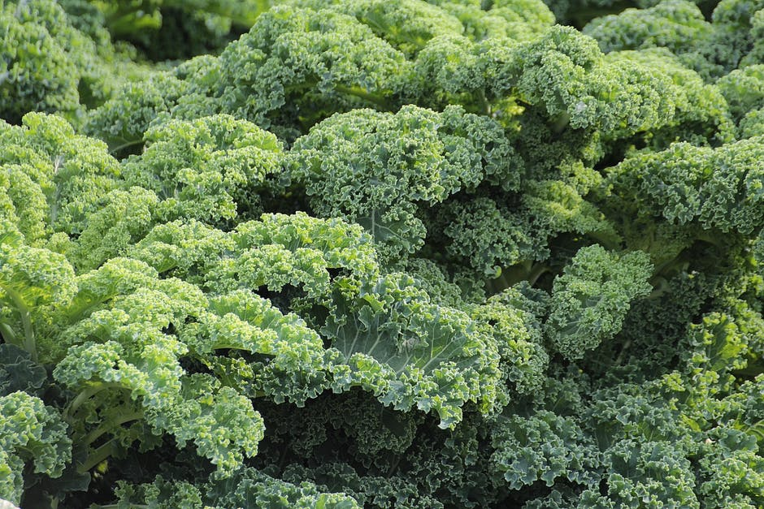
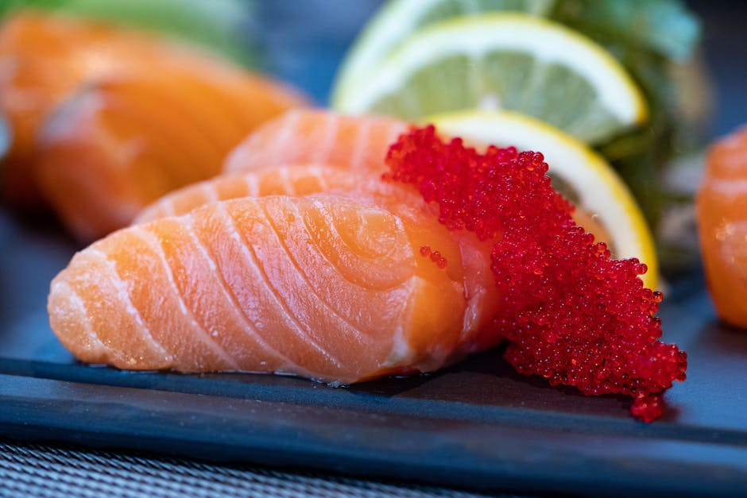
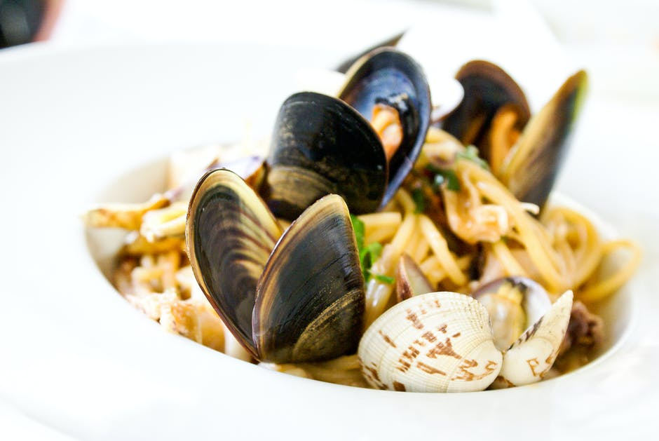

KALE
Of all the healthy leafy greens, kale is the king.
It is loaded with vitamins, minerals, fiber, antioxidants and various bioactive compounds. Kale may be even healthier than spinach. Both are very nutritious, but kale is lower in oxalates, which are substances that can bind minerals like calcium in your intestine, preventing them from being absorbed
.

SALMON
Salmon — and other fatty types of fish — contain the greatest amount of omega-3s fatty acids.
Omega-3s are extremely important for the optimal function of your body. They’re linked to improved wellbeing and a lower risk of many serious diseases.
Although salmon is mainly prized for its beneficial composition of fatty acids, it also packs a massive amount of other nutrients.
SEAWEED
Seaweed is popular in dishes like sushi. Many sushi dishes also include a type of seaweed known as nori, which is used as an edible wrapping.
In many cases, seaweed is even more nutritious than land vegetables. It is particularly high in minerals like calcium, iron, magnesium and manganese
It is also loaded with various bioactive compounds, including phycocyanins and carotenoids. Some of these substances are antioxidants with powerful anti-inflammatory capacities.

SHELLFISH
Many sea animals are high in nutrients, but shellfish may be among the most nutritious of all.
Commonly consumed types of shellfish include clams, oysters, scallops and mussels.
Clams are among the best sources of vitamin B12 in existence, with 100 grams of clams supplying over 16 times the RDI. They are also loaded with vitamin C, various B vitamins, potassium, selenium and iron.

GARLIC
Not only can it turn all sorts of bland dishes delicious, it is also very nutritious.
It is high in vitamins C, B1 and B6, calcium, potassium, copper, manganese and selenium (16).
Garlic is also high in beneficial sulfur compounds such as allicin.
Many studies show that allicin and garlic may lower blood pressure as well as total and “bad” LDL cholesterol. It also raises “good” HDL cholesterol, potentially reducing risk of heart disease down the line

BLUEBERRIES
Although not as high — calorie for calorie — in vitamins and minerals as vegetables, they’re packed with antioxidants.
They are loaded with powerful antioxidant substances, including anthocyanins and various other plant compounds, some of which can cross the blood-brain barrier and exert protective effects on your brain.